I am a Ph.D. candidate in the Department of Artificial Intelligence at Korea University,
working in the Pattern Recognition & Machine Learning Lab under the supervision
of Prof. Seong-Whan Lee.
Research Interests:
Text-to-Speech · Conversational Speech Synthesis · Full Duplex Speech-to-Speech
Emotion Recognition · Voice Conversion · Multimodal Affective Modeling
Ph.D. Candidate
Sep. 2022 - Present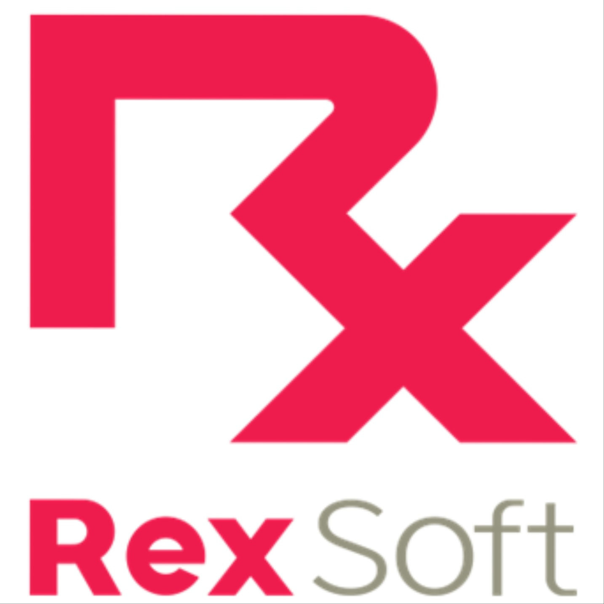
Developer Intern
Jan. 2022 - Feb.2022Data Scientist Intern
Jun. 2021 – Jul.2021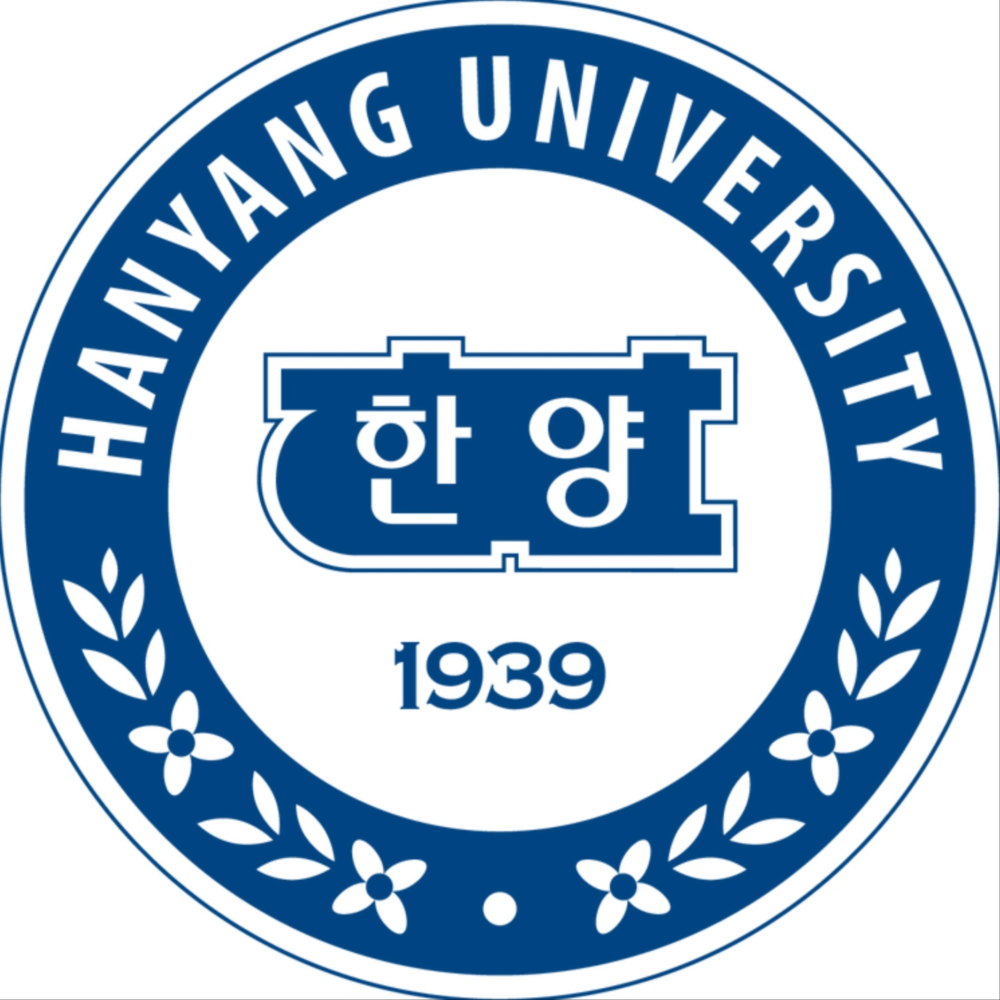
B.S. in Applied Mathematics
Mar. 2016 – Jul. 2022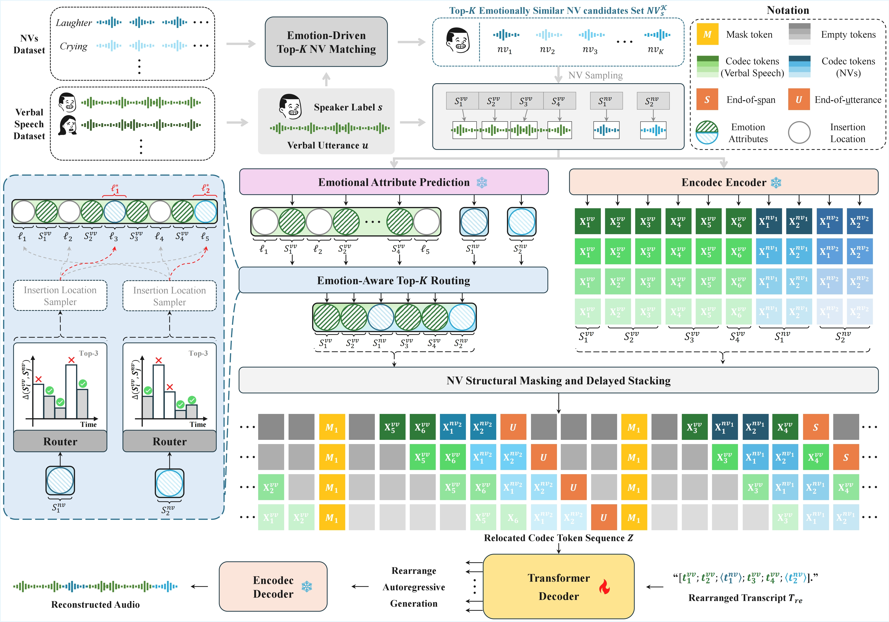
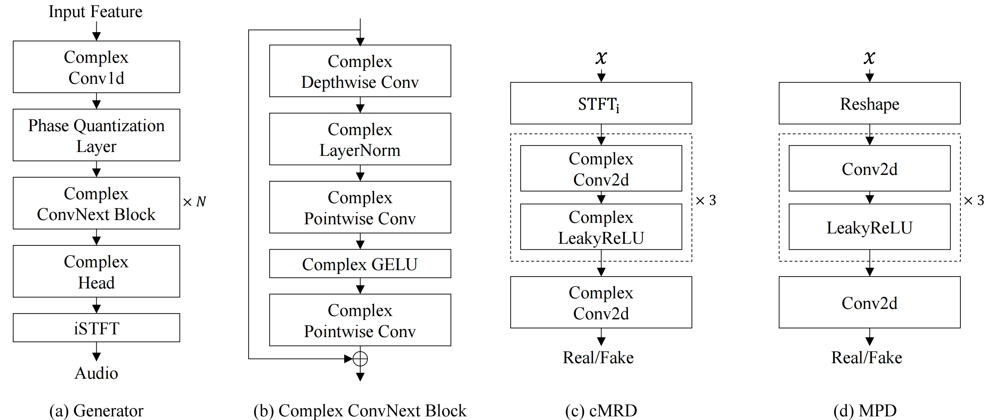
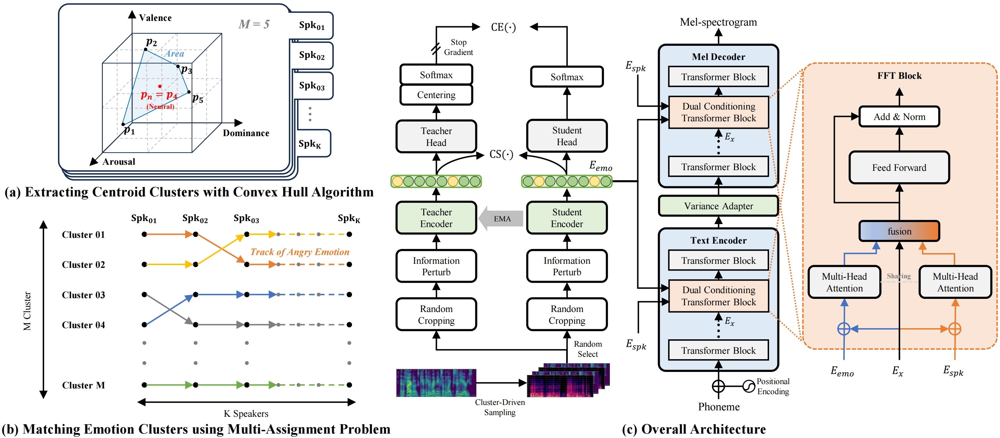
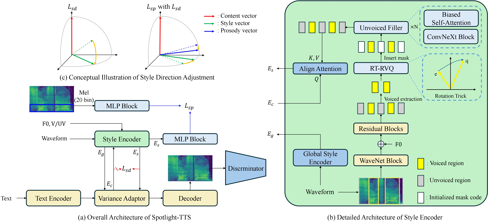
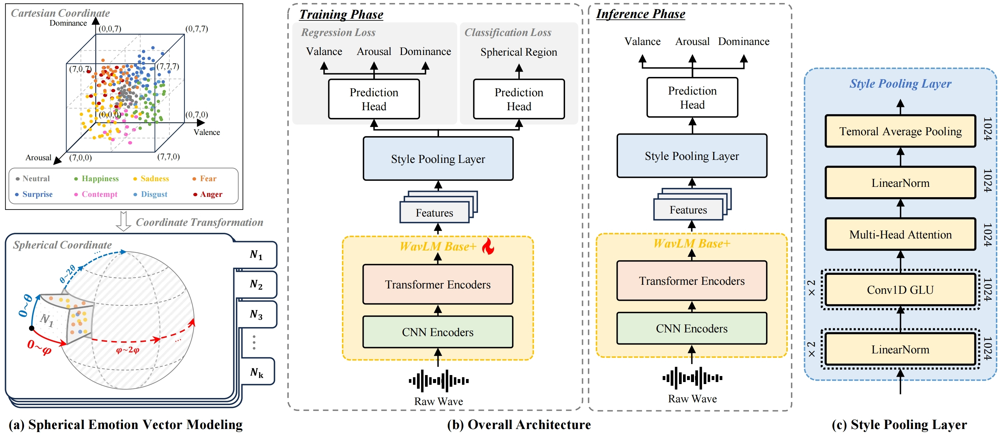
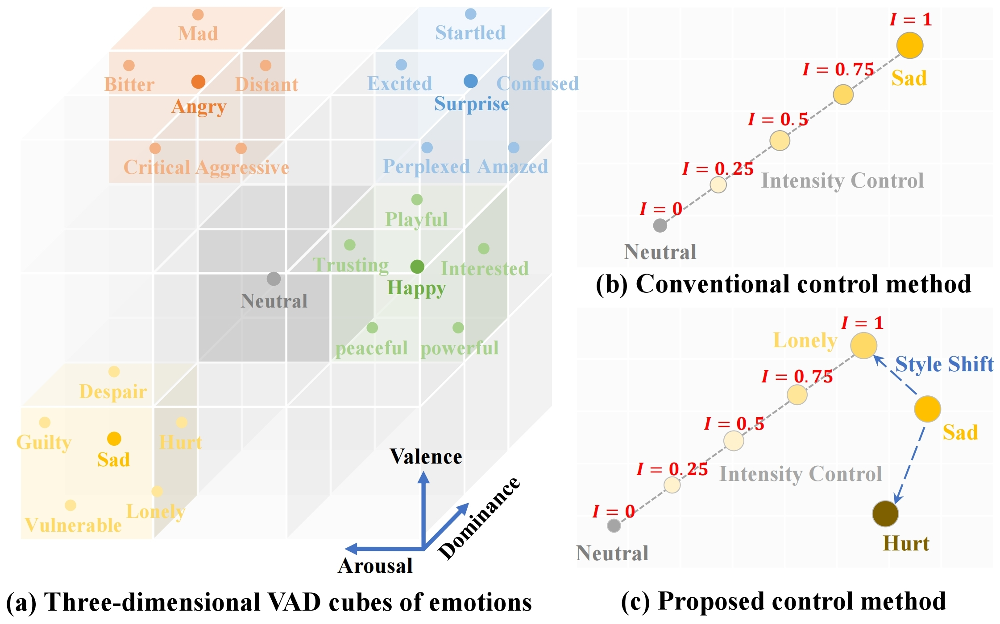
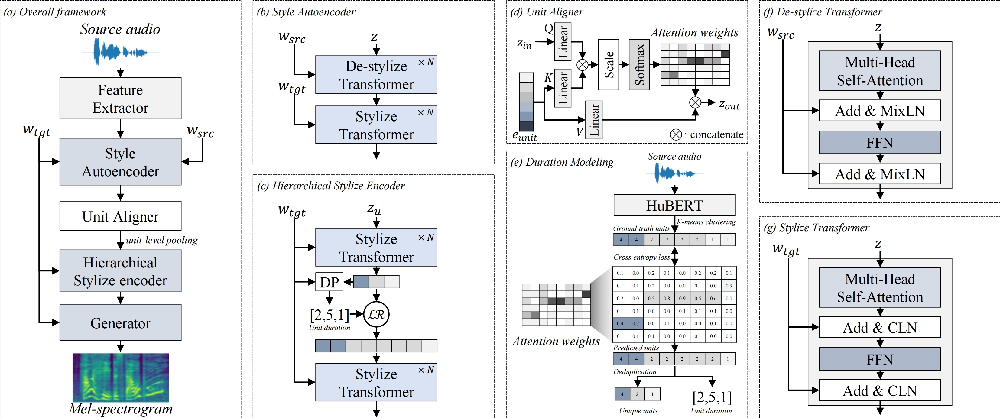
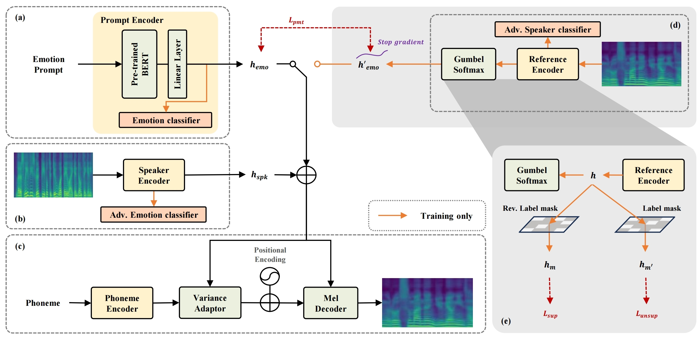
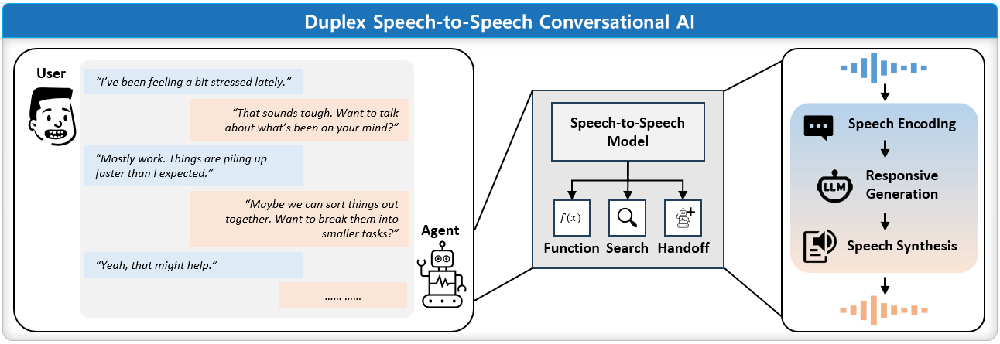
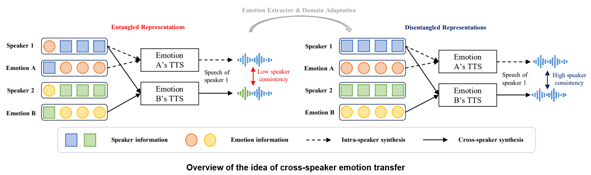
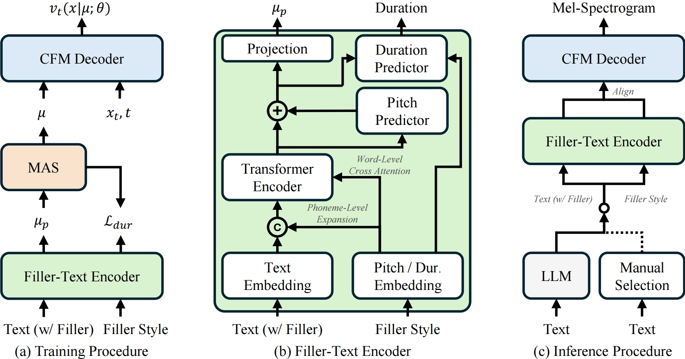